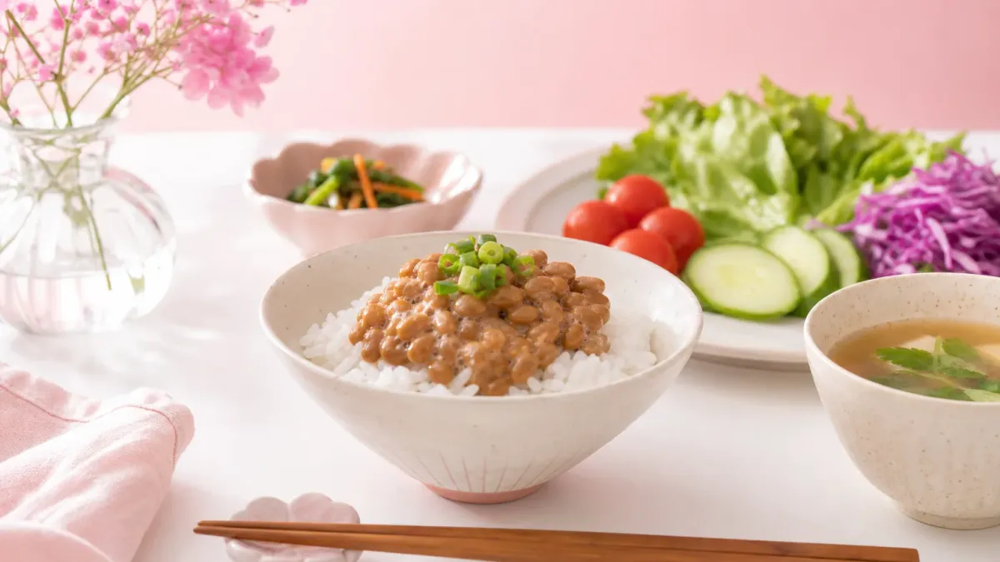

納豆でダイエットできるの？まず結論から
結論から言うと、納豆は低カロリー・高たんぱく・食物繊維豊富な食品で、ダイエット中の食事に取り入れやすい優秀な食材です。
1パック（約50g）あたりのカロリーは約100kcal。たんぱく質は約8g含まれており、満足感を得ながらカロリーを抑えやすいのが特徴です。
ただし「食べるだけで痩せる」魔法の食品ではありません。食事全体のバランスを整えながら、納豆を上手に組み合わせることが大切です。
納豆に含まれるダイエットに役立つ成分
① たんぱく質（約8g／1パック）
筋肉の材料となるたんぱく質は、基礎代謝を維持するために欠かせません。ダイエット中に不足しがちな栄養素なので、納豆で手軽に補えるのは大きなメリットです。
② 食物繊維（約3g／1パック）
腸内環境を整える水溶性・不溶性の食物繊維を両方含んでいます。食後の血糖値の急上昇をゆるやかにする働きも期待できます。
③ ナットウキナーゼ
納豆特有の酵素です。血流をサポートする働きが研究で注目されており、体のめぐりを整えたい方に向いています。
④ イソフラボン
大豆由来のイソフラボンは、女性ホルモン（エストロゲン）に似た構造を持ちます。ホルモンバランスが乱れやすい時期のサポートとして取り入れる女性も多い成分です。
⑤ ビタミンK2
骨の健康維持に関わるビタミンです。ダイエット中も骨密度を意識したい女性にとって、嬉しい栄養素のひとつです。
🫘 納豆1パック（50g）の栄養＆ダイエット活用ポイント
毎日1パックで手軽に栄養チャージ！数字で見る納豆のスペック
約100 kcal
約8 g
約3 g
約5 g
納豆ダイエットの正しい食べ方｜3つのポイント
ポイント1：1日1〜2パックを目安にする
納豆は栄養豊富ですが、食べすぎるとカロリーや塩分（付属のたれ）が増えすぎることも。1日1〜2パックを目安に取り入れましょう。
ポイント2：たれの量を調整する
付属のたれには塩分・糖分が含まれています。たれを半量にしてポン酢や大根おろしに替えるだけで、塩分・カロリーをカットできます。
ポイント3：加熱しすぎない
納豆特有のナットウキナーゼは50℃以上で失活します。チャーハンや炒め物に使う場合は最後に加えるか、そのまま食べる方法がおすすめです。
納豆を使った1週間の取り入れ方プラン
無理なく続けるために、曜日ごとに食べ方を変えてみましょう。飽きずに7日間続けられるローテーションです。
| 曜日 | 食べ方アイデア | タイミング |
|---|---|---|
| 月 | 納豆＋ご飯（たれ半量） | 朝食 |
| 火 | 納豆＋豆腐の冷ややっこ | 夕食 |
| 水 | 納豆＋キムチ＋ご飯 | 朝食 |
| 木 | 納豆＋大根おろし＋ポン酢 | 夕食 |
| 金 | 納豆＋アボカドサラダ | 昼食 |
| 土 | 納豆＋オクラ＋めかぶ（ねばねばトリオ） | 夕食 |
| 日 | 納豆＋卵かけご飯（たれ少量） | 朝食 |
食事全体のバランスも大切です。ダイエット中の1週間献立プランも参考にしながら、納豆を上手に組み込んでみてください。
納豆と相性のいい食材3選
① キムチ
乳酸菌と納豆菌のダブル発酵食品の組み合わせ。腸内環境を整えたい方に人気の定番コンビです。辛みが苦手な方は少量から試してみましょう。
② オクラ・めかぶ
ねばねば食材同士の組み合わせは、食物繊維をさらに増やせます。血糖値の急上昇をゆるやかにしたいときにおすすめです。
③ 豆腐
同じ大豆食品でたんぱく質をプラスできます。低カロリーで満足感を高めたいときに◎。豆腐を使ったダイエットレシピと組み合わせると、より充実した食事になります。
納豆ダイエットで気をつけたいこと
ワーファリン服用中の方は注意
納豆に含まれるビタミンK2は、血液をサらさらにする薬（ワーファリン）の効果に影響することがあります。服薬中の方は必ず医師に相談してください。
付属のたれ・からしのカロリーも計算に入れる
付属のたれ1袋は約20〜30kcal。毎日2パック食べる場合は、たれのカロリーも意識しましょう。ポン酢や少量の醤油に替えるのがおすすめです。
「納豆だけ」に頼らない
納豆は優れた食品ですが、それだけで体型が変わるわけではありません。野菜・たんぱく質・炭水化物のバランスを整えた食事の一部として取り入れることが大切です。
よくある質問
Q. 納豆は朝と夜、どちらに食べるのが効果的ですか？
目的によって異なります。朝食に食べると、たんぱく質で1日の代謝をスタートさせやすく、満腹感が続きやすいメリットがあります。一方、夕食に食べると、ナットウキナーゼが食後3〜8時間ほど働くため、就寝中の血流ケアに役立つとされています。どちらも一定の意義があるので、自分のライフスタイルに合わせて選びましょう。
Q. 納豆を毎日食べても大丈夫ですか？
一般的に、健康な方であれば1日1〜2パックを毎日食べても問題ないとされています。ただし、大豆イソフラボンの摂りすぎを避けるため、豆乳・豆腐・味噌などほかの大豆食品と合わせて過剰摂取にならないよう意識しましょう。目安として、大豆イソフラボンの1日摂取上限は約70〜75mgとされています（食品安全委員会）。
Q. 納豆ダイエットはいつから効果が出ますか？
個人差がありますが、腸内環境の変化は2〜4週間ほど継続することで感じやすくなると言われています。体重の変化は食事全体のバランスや運動習慣にも左右されるため、納豆単体での効果を数字で断言することはできません。まずは1週間、毎日1パックを食事に加えることから始めてみましょう。
まとめ：納豆ダイエットは「続けやすさ」が最大の武器
納豆は1パック約100円前後で手に入り、調理不要で食べられる手軽さが魅力です。
大切なのは以下の3ステップです。
- 1日1〜2パックを目安に取り入れる
- たれを減らし、ポン酢や大根おろしで食べる
- 食事全体のバランスを整えながら継続する
まずは7日間、毎日の食事に納豆を1パック加えることから始めてみてください。小さな習慣の積み重ねが、体の変化につながります。
ダイエット習慣をもっと広げたい方は、ダイエット習慣化のコツをまとめた記事もあわせてご覧ください。